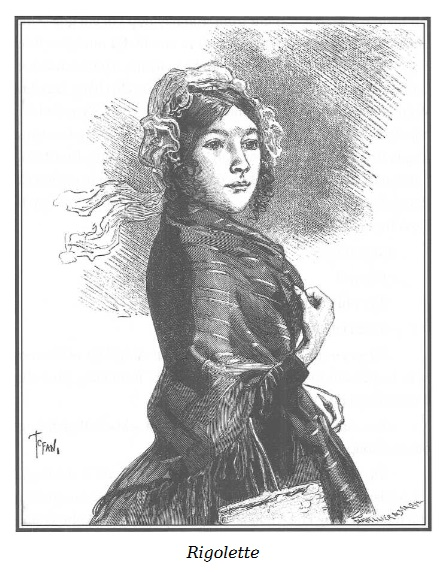

Jacques Ferrand đã dễ dàng và nhanh chóng xin cho Marie được tự do, thứ tự do chỉ lệ thuộc vào một quyết định hành chính đơn giản.
Được mụ Vọ thông báo Sơn Ca hiện bị giam ở Saint-Lazare, lão lập tức tự mình liên hệ ngay với một trong những khách hàng, một người đáng kính và có thế lực, nói với họ rằng một thiếu nữ, trước đã lỗi lầm, nhưng thực tâm hối cải, mới đây bị giam giữ ở Saint-Lazare, do chung đụng với các nữ phạm nhân khác mà có nguy cơ nhụt ý chí hoàn lương. “Người thiếu nữ ấy được nhiều nhân vật đáng tôn trọng thiết tha gửi gắm cho lão.” Họ sẽ săn sóc cô sau khi cô được tha. Lão Ferrand nói tiếp và lão khẩn cầu ông khách hàng nhiều quyền thế ấy, nhân danh đạo đức, tôn giáo và sự phục hồi nhân phẩm sau này của cô gái mà xin cho cô được tự do.
Cuối cùng, để khỏi dính líu vào mọi sự truy tìm về sau, lão đã khẩn thiết lưu tâm người khách đừng nêu tên lão ra khi làm việc thiện này. Nguyện vọng ấy, với chiêu bài bác ái khiêm tốn của Ferrand vốn có tiếng vừa thánh thiện vừa đáng kính, được tuân thủ chu đáo.
Vị khách nọ đã tự đứng tên xin tha và lại còn ân cần thỏa mãn nguyện vọng của lão đến mức gửi cả cho lão lệnh tha bổng để có thể trao tận tay cho những người bảo trợ cô gái.
Mụ Séraphin đưa tờ lệnh cho viên giám đốc nhà lao, nói thêm là mụ được giao nhiệm vụ dẫn cô về cho những người đã quan tâm đến cô.
Cứ theo những nhận xét tốt tuyệt vời của bà thanh tra nói với d’Harville phu nhân, chẳng có ai không tin là Marie đã được tha nhờ sự can thiệp của nữ Hầu tước.
Mụ quản gia của lão chưởng khế do đó không thể gây nên bất kỳ một sự nghi kỵ nào ở nạn nhân. Mụ ta, để cho hợp với hoàn cảnh và cũng như ngôn ngữ thông tục thường gọi, có vẻ thộn. Phải chú ý quan sát mới phát hiện được một cái gì như là lọc lừa, dối trá và tàn bạo trong khóe mắt hiền lành và nụ cười giả dối của mụ.
Dù bản chất cực kỳ gian ác khiến mụ trở thành đồng lõa và cộng sự tâm tình của chủ, mụ Séraphin không khỏi sững sờ trước vẻ đẹp dễ thương của cô gái mà từ ngày tấm bé mụ đã giao cho mụ Vọ… và ngày nay chắc chắn mụ lại sẽ đưa về cõi âm ti.
Mụ lên giọng ngọt ngào:
– Thế nào, cháu thân mến, cháu hài lòng được ra khỏi nhà lao chứ?
– Ôi, thưa bà, chắc chắn là nhờ ơn nữ Hầu tước d’Harville mà được thế, phu nhân thật là phúc hậu.
– Cháu không nhầm đâu! Nhưng thôi, lại đây, ta cùng đi, đã hơi muộn rồi đấy. Và ta còn phải đi khá nhiều đường đất kia!
Marie reo lên:
– Chúng ta về ấp Bouqueval với bà Georges phải không, thưa bà?
– Phải! Tất nhiên là thế, chúng ta về nông thôn, về với bà Georges! – Mụ quản gia nói để Marie không còn chút nghi ngờ gì.
Và rồi với một vẻ hiền lành láu lỉnh, mụ bảo:
– Chưa hết đâu! Trước khi về với bà Georges, còn một điều bất ngờ nhỏ nữa chờ cháu đấy. Đi thôi, đi thôi! Xe của chúng ta đang chờ ở dưới kia kìa! Ra khỏi đây, nhẹ mình nhé! Cháu thân mến, nào ta đi thôi!
– Dạ xin kính chào các ngài!
Chào viên lục sự và người thư ký, mụ ta cùng Marie đi ra. Một người gác cùng ra theo họ, để truyền lệnh mở các lần cửa. Qua lần cửa cuối cùng, hai người đang đứng dưới cái cổng vòm rộng mênh mông nhìn ra mặt phố Faubourg-Saint-Denis, thì bỗng thấy một thiếu nữ cũng đang đi đến, chắc là để thăm nữ phạm nhân nào đó.

.Người đó là Rigolette. Rigolette bao giờ cũng nhanh nhẹn và đỏm dáng như thế, một cái mũ trùm đơn giản, gần như còn mới, với những dải màu anh đào rất hợp với món tóc mun đóng khuôn bộ mặt xinh xắn, áo xa tanh nâu, cổ bẻ trắng tinh. Cô xách một cái làn bằng rơm bện, bước đi nhẹ nhàng, yểu điệu và ý tứ nên đôi giày cao cổ sạch như li như lau, mặc dù, cực chưa, cô gái đáng thương đã phải cuốc bộ từ rất xa!
– Chị Rigolette! – Marie reo to, khi nhận ra người bạn cũ ở trại cải tạo và người bạn đồng hành trong những cuộc rong chơi nơi đồng nội.
– Sơn Ca!
Thế là hai cô gái ôm chầm lấy nhau.
Cốt cách tương phản giữa hai nàng tố nga ấy quyến rũ phi thường. Họ quấn quýt lấy nhau, cả hai đều sắc nước hương trời, mỗi người một vẻ. Cô này thì tóc vàng hoe, đôi mắt biếc mở to buồn buồn, hơi xanh, hơi u sầu, hơi thanh thoát, vẻ tuyệt đẹp của các cô thôn nữ mà nhà danh họa Greuze đã họa lên bằng những màu lung linh, tươi mát, pha trộn mơ mộng, với trắng trong, duyên dáng và thơ ngây khó tả nên lời.
Cô kia thì tóc mun óng ả, má hồng đầy đặn, mắt đen mê hồn, nụ cười hồn nhiên, vẻ mặt linh lợi, mẫu hình tuyệt bích của tuổi thanh xuân tươi đẹp, vô tư lự, hiện thân hiếm hoi và dễ mến của hạnh phúc trong khoan dung, của đức hạnh trong phóng túng, của vui sướng trong cần lao.
Hồn nhiên vuốt ve, ôm ấp nhau chán, hai cô mới ngắm nghía lẫn nhau. Rigolette hớn hở gặp lại bạn xưa.
Marie thì lại thẹn thùng.
Nhìn cô bạn gái, cô nhớ lại chuỗi ngày hạnh phúc ngắn ngủi trước khi lần đầu sa ngã.
– Em đấy à? Thích quá đi mất thôi. – Cô thợ khâu đỏm dáng nói.
– Lạy Chúa, đúng thế! Thú vị bất ngờ thật! Đã lâu lắm chúng ta không gặp nhau. – Marie đáp.
– Chà, giờ thì chị hết ngạc nhiên vì sao sáu tháng nay không được gặp em. – Rigolette nhìn bộ trang phục mộc mạc của Marie, – thế em sống ở nông thôn à?
Marie đưa mắt nhìn xuống:
– Phải, mới ít lâu nay…
– Và em cũng như chị đến nhà giam thăm người nào đó chứ gì?
Marie ấp úng, ngượng nghịu:
– Phải, em vừa… em vừa… đến thăm một người.
– Và giờ em trở về nhà? Tất nhiên là cách xa Paris! Sơn Ca bé bỏng thân yêu ơi, em lúc nào cũng nhân hậu. Chị thừa biết em vốn như thế mà. Em còn nhớ cái bà gái đẻ tội nghiệp mà em đã lấy đệm đem cho, cho cả quần áo và chỗ tiền ít ỏi còn lại của em định dùng để đi chơi không? Lúc ấy em quá mê thích nông thôn mà… Em ấy, thưa tiểu thư nông thôn ạ!
– Còn chị, chị chẳng thích mấy chứ gì, nhưng mà chị chiều lòng em, Rigolette, chẳng thế mà vì em, chị vẫn đi đấy thôi!
– Cũng vì cả chị nữa đấy chứ! Vì vốn thường ngày hơi nghiêm nghiêm, em lại trở nên đến là thoải mái tươi vui, có lần như đã gần hóa rồ nữa kia, giữa cánh đồng và rừng cây, khiến chỉ mỗi việc ngắm em ở đấy cũng làm chị vui lây. Ờ, để chị ngắm em thêm tí nữa nào. Cái mũ trùm tròn này hợp với em ghê! Xinh lắm đấy, em ạ! Rõ ràng là, trời sinh ra em để đội mũ trùm thôn nữ, cũng giống chị đội mũ trùm thợ khâu ấy mà. Thế là em đạt sở thích, thật sự toại nguyện rồi còn gì nữa. Vả lại, chị chẳng lạ gì, khi không thấy em đâu nữa, chị mới tự bảo: “Cái con bé Sơn Ca hiền hậu ấy không phải sinh ra cho Paris, nó thực sự là bông hoa rừng như là trong bài hát và những bồn hoa ấy đâu có sống được trong thành phố, không khí ở đó đâu có hợp. Vì thế nên cô nàng Sơn Ca mới đi làm thuê cho những người trung hậu ở nông thôn.” Em đã làm như thế chứ gì, phải không?
Marie đỏ mặt:
– Đúng ạ!
– Tuy nhiên, chị chỉ trách em một điều.
– Trách em ấy à?
– Lẽ ra em phải báo cho chị biết chứ! Ai lại đột nhiên mới hôm trước hôm sau đã rời đi như vậy? Chí ít thì cũng phải cho nhau biết tin một chút chứ!
– Em, em đã rời Paris, có hơi nhanh thật. – Marie thẹn thùng, – em đã không thể…
– Ôi, chị không giận đâu, chị gặp được em đã là thích quá rồi. Vả lại, em rời Paris cũng đúng thôi. Này, ở đó mà muốn sống cho yên thân cũng khó, chưa kể là thân con gái đơn côi như chúng mình, có thể hư hỏng như chơi dù không muốn đi nữa. Khi chẳng có ai khuyên bảo, khó giữ thân, bọn đàn ông thì chỉ khỏe hứa trời hứa biển, với lại, chao ôi, nhiều lúc cùng túng quá là gay go… Này, em còn nhớ không? Cái Julie thật dễ thương và Rosine tóc vàng mắt huyền ấy mà…
– Ừ, em nhớ!
– Vậy thì, Sơn Ca ạ, chúng nó đều bị lừa cả rồi, bị bỏ rơi, cuối cùng thì hết rủi này đến ro khác, bọn chúng trở thành những người bỏ đi và bị đem tống giam ở đây.
– Chao ôi! Lạy Chúa! – Marie cúi đầu, mặt đỏ lừ. Rigolette hiểu lầm câu nói của bạn.
– Chúng nó có lỗi thật đấy, thậm chí đáng khinh nữa. Nếu em cho là thế thì tùy em, chị không có ý kiến, nhưng Sơn Ca ơi, chúng mình đã may mắn giữ mình được trong sạch. Em thì vì đã về nông thôn sinh sống gần những người trung hậu, còn chị thì chẳng có thì giờ cho những chuyện tình ái lăng nhăng… Chị thích nuôi chim hơn, dành hết thì giờ cho công việc để mà có cái vui được nơi ăn chốn ở tuy nhỏ hẹp nhưng xinh xắn, đàng hoàng. Vì thế, chị nghĩ, cũng không nên nghiệt ngã quá đối với người khác. Lạy Chúa! Ai mà biết được! Nếu hoàn cảnh, sự lừa lọc không dự phần lớn trong những lỗi lầm của Rosine và Julie, và nếu chúng mình ở vào địa vị của họ, chắc gì chúng mình đã không làm như họ?
– Chao ôi! – Marie cay đắng nói. – Em có lên án các chị ấy đâu! Em chỉ cám cảnh cho các chị ấy!
– Đi thôi! Đi thôi! Vội lắm rồi, cháu thân mến! – Mụ Séraphin sốt ruột đưa cánh tay cho nạn nhân của mụ.
Rigolette năn nỉ:
– Bà ơi, hãy cho chúng cháu thêm ít phút nữa. Lâu quá rồi cháu mới được gặp Sơn Ca tội nghiệp của cháu!
Mụ Séraphin phật ý vì cuộc gặp gỡ bất ngờ này:
– Nhưng mà muộn rồi các cháu ạ! Mười phút nữa thôi đấy!
Marie nắm lấy hai tay Rigolette:
– Thế còn chị, chị vẫn tốt tính. Chị vẫn luôn luôn vui vẻ chứ? Lúc nào cũng hài lòng chứ?
– Trước đây hai ngày thì thế đấy, yên phận và vui vẻ, nhưng hôm nay thì…
– Chị có điều gì sầu não?
– Chị ấy à? Nhầm quá đi thôi! Em đã biết chị rồi đấy. Chị thật là một thứ Roger-Bontemps*. Chị có thay đổi gì đâu. Nhưng khốn thay, thiên hạ đâu có như chị. Và do những người khác họ có điều phiền muộn, nên chị cũng buồn lây.
Người hài hước và sống không chút gì lo phiền.
– Chị lúc nào cũng tốt bụng.
– Biết làm sao được! Em tưởng tượng xem, chị đến đây là vì một cô gái tội nghiệp đấy, một cô hàng xóm của chị, con chiên lành của Chúa bị họ đổ vấy tội, thật đáng ái ngại. Tên cô ấy là Louise Morel, con gái của một người thợ trung thực, bác này khổ quá, nên đã phát điên…
Nghe đến tên Louise Morel, một trong những nạn nhân của lão chưởng khế, mụ Séraphin giật mình và nhìn kĩ Rigolette.
Mụ chưa thấy cô thợ trẻ đỏm dáng này bao giờ, tuy vậy mụ không bỏ qua một lời trao đổi nào giữa hai cô gái.
Marie ngậm ngùi:
– Tội nghiệp cho chị ấy nhỉ? Hẳn chị ấy phải vui vì dù sao chị đã không quên chị ấy trong lúc vận hạn này.
– Cũng vẫn chưa hết đâu! Cứ như là vận đen, số mạt ấy! Em thấy chị rồi đấy! Chị từ khá xa đi đến tận đây đấy! Mà lại từ một nhà tù khác kia, nhưng nhà tù đàn ông.
– Chị đến nhà tù đàn ông kia à?
– Chao ôi! Lạy Chúa! Đúng thế đấy! Chẳng là ở đấy chị có một người quen. Thật là tội nghiệp, họ đang rầu rĩ buồn khổ quá, vì thế em thấy chị đem theo cái làn mây này đấy, – cô chỉ cái làn ngăn làm đôi – mỗi người một phần. Hôm nay chị đem quần áo cho Louise, và vừa rồi chị cũng mang vài thứ cho anh Germain tội nghiệp. Người tù ấy tên là Germain. Chị không thể nghĩ đến những điều vừa diễn ra giữa mình và anh ấy mà không bùi ngùi, muốn khóc. Thật là ngốc quá, biết là chẳng hơi đâu mà để bụng, ấy vậy mà cuối cùng thì chị lại thế này đây.
– Thế tại sao chị lại muốn khóc?
– Em thử hình dung xem là Germain khổ sở đến thế nào! Bị coi như kẻ xấu trong nhà tù, anh ấy rầu rĩ chẳng thiết gì nữa, bỏ cả cơm nước, gầy đi trông thấy… Chị thấy vậy và tự nhủ: “Anh ấy không thiết ăn, vậy thì mình sẽ chuẩn bị một món quà trước đây khi còn là láng giềng anh ấy vẫn thích. Hẳn anh ấy sẽ không nhịn ăn nữa.” Gọi là quà bánh kẹo ngon, thì em nên thông cảm mà hiểu đó chỉ là mấy quả táo chín rõ đẹp, rõ ngon, vàng ươm, nghiền với sữa và đường, đựng đầy một cái chén đẹp và sạch. Vừa đây chị mang đến cho anh ấy, bảo rằng tự tay mình đã làm món quà ngon lành và tầm thường ấy đãi anh ấy như những ngày tốt đẹp trước kia. Em hiểu không? Chị cứ chắc là anh ấy sẽ vui bụng mà muốn ăn. Ấy thế mà, lầm to!
– Sao vậy?
– Anh ấy tủi thân muốn khóc, khi anh ấy nhận ra cái chén chị vẫn thường đong sữa, anh ấy khóc òa… Thế là rốt cuộc, chị cũng khóc dù cố nín. Em thấy chị may mắn như thế đấy, cứ tưởng làm thế là an ủi được anh ấy, vậy mà lại làm cho anh ấy buồn bã hơn.
– Đúng đây, nhưng mà đối với anh ấy thì những giọt nước mắt của chị dịu ngọt biết nhường nào!
– Kệ! Biết vậy, chị sẽ tìm cách khác an ủi anh ấy. À, nhưng mà chị nói chuyện anh ấy với em mà chẳng cho em biết anh ấy là ai, người hàng xóm cũ của chị đấy. Chàng trai trung thực nhất trên đời này, cù mỉ cù mì, rụt rè như con gái, chị coi như là bạn quý, như anh trai.
– Ôi, thế thì em hiểu vì sao mà nỗi buồn của anh ta lại trở thành nỗi buồn của chị rồi!
– Có phải không nào? Nhưng rồi em sẽ thấy là anh ấy nhân hậu thế nào! Lúc giã từ, chị mới hỏi đùa như thường lệ để làm anh ấy vui lên một chút, xem anh ấy có nhờ vả gì không, rằng: Là người dịch vụ bé nhỏ của anh ấy, chị sẽ rất đúng hẹn, rất năng nổ để giữ khách hàng. Thế là anh ấy cố mỉm cười nhờ chị đem đến cho anh ấy một trong những tiểu thuyết của Walter Scott. Trước đây tối tối anh ấy vẫn đọc cho chị vừa khâu vá vừa nghe, quyển ấy nhan đề là Ivan… gì nhỉ, Ivanhoe, đúng rồi! Chị thích cuốn ấy lắm, anh ấy phải đọc cho chị nghe đến hai lượt đấy! Tội nghiệp Germain, anh ấy thật chiều chị!
– Anh ấy muốn có những kỷ niệm ngày hạnh phúc đã qua đấy, chị ạ!
– Hẳn vậy, bởi vì anh ấy đã thiết tha nhờ chị đến cái phòng sách mọi khi, không phải là để thuê mà để mua cũng những quyển sách hai người vẫn cùng đọc chung. Đúng là mua thực sự, và em tính xem, đối với anh ấy thì thật là một sự hy sinh vì anh ấy cũng nghèo chẳng khác gì chị em mình.
– Anh ấy tốt thật! – Marie cảm động.
– Đấy, em cũng bùi ngùi chẳng kém gì chị. Khi anh ấy nhờ chị việc ấy, Sơn Ca ơi, em hiểu không, càng muốn khóc chị càng cố gượng cười, vì khóc đến hai lần trong một kỳ đi thăm với mục đích làm anh ấy hết buồn, thì quá đáng lắm. Vì thế, để giấu nỗi buồn, chị mới nhắc lại những chuyện nực cười của một lão Do Thái, nhân vật của cuốn tiểu thuyết trước đây đã từng làm bọn chị cười mãi. Thế mà chị càng kể, anh ấy càng nhìn chị, nước mắt chứa chan… Chà, chị ấy mà, đến vỡ tim mất thôi. Trước đấy, chị đã cố nuốt nước mắt, rốt cuộc thì chị cũng khóc. Khi chị từ biệt ra về, anh ấy khóc rưng rức mà chị thì giận mình ngu ngốc quá. Nếu cứ dỗ dành như thế này mà làm cho anh ấy vui bụng thì bõ công gớm! Cứ đinh ninh là làm cho anh ấy cười, thế mà lại đạt kết quả mới kỳ lạ làm sao!
Nghe nói đến tên Germain, nạn nhân khác nữa của lão chưởng khế, mụ Seraphin càng chú ý nhiều hơn.
Marie hỏi:
– Thế chàng trai ấy đã làm gì để đến nỗi phải ngồi tù?
Rigolette bất nhẫn, từ mủi lòng trở nên phẫn nộ, nói như thét:
– Anh ấy làm gì à? Anh ấy bị cái lão quỷ già chưởng khế truy tố, này, cũng chính lão ta là người đã tố cáo Louise đấy!
– Cô Louise mà chị đến đây để thăm ấy à?
– Chính cô ấy! Cô ấy là người ở của lão chưởng khế và Germain thì làm thủ quỹ cho lão. Nói em biết lão ấy tố cáo chàng trai tội nghiệp này bất công như thế nào và về chuyện gì thì dài quá… Nhưng điều chắc chắn là cái lão độc ác ấy như là kẻ phát khùng hóa dại muốn cắn cấu hai con người khốn khổ này, mặc dù họ chưa hề làm gì hại đến lão. Nhưng coi chừng đấy, sẽ có ngày thôi! – Rigolette nói những lời sau cùng này với một giọng làm mụ Séraphin phát sợ, chen ngang vào câu chuyện. Coi như không dính dáng gì đến mình, mụ ngọt ngào nói với Marie:
– Cháu thân mến, muộn rồi đấy, phải đi thôi, mọi người đang đợi chúng ta. Ta cũng hiểu là những điều cô đây nói hấp dẫn cháu, nhưng ta thì không quen biết cô gái và chàng trai được nói đến, nên rất sốt ruột. Lạy Chúa! Có thể nào lại có những người độc ác đến thế? Thế cái ông chưởng khế tồi tệ mà cô nói, tên ông ta là gì nhỉ, thưa cô?
Rigolette chẳng có lý do gì để phải cảnh giác với mụ cả. Tuy nhiên, nhớ đến những lời căn dặn của Rodolphe rằng cô cần hết sức gìn giữ ý tứ quanh việc ông kín đáo bảo vệ cho Germain và Louise, cô hối tiếc là đã không tự kiềm chế để thốt ra câu: “Coi chừng đấy! Sẽ có ngày thôi!”
– Con người độc ác ấy là ông Ferrand, thưa bà. – Rigolette khéo léo trả lời để gỡ lại câu nói bộp chộp, hớ hênh của mình. – Ông ta càng hành Louise và Germain thì mọi việc càng tồi tệ hơn vì chẳng có ai nghĩ đến họ ngoài tôi, mà tôi thì giúp được gì cho đâu.
Mẹ Séraphin dò la:
– Khổ thật! Ta đã hy vọng ở điều ngược lại kia, khi cô bảo “nhưng hãy coi chừng đấy…” Ta tin chắc là cô đã có chỗ tin cậy, một trang nghĩa hiệp nào đó để yểm trợ cho hai người bất hạnh chống lại ông chưởng khế độc ác kia.
Rigolette làm lạc hướng hoàn toàn những mối nghi ngờ của mụ Séraphin:
– Than ôi! Làm gì có ai đâu, thưa bà. Có ai mà lại đủ hào hiệp để đứng về phía hai người trẻ tuổi nghèo hèn kia chống lại người giàu có và thế lực như ông Ferrand.
– Ôi, có chứ, có những tâm hồn khá hào hiệp để làm việc ấy đấy. – Marie nghĩ một lúc và với một hứng khởi không ngăn nổi. – Có đấy! Em biết có một người tự nguyện nhận nhiệm vụ bảo vệ những ai đau khổ và bênh vực cho họ, thường rất hay cứu độ cho người ngay và đáng gờm đối với kẻ ác.
Rigolette ngạc nhiên nhìn Marie và liên hệ đến Rodolphe, suýt nữa thì buột mồm mà nói ra rằng mình cũng biết một người dũng cảm đứng về phía kẻ yếu chống kẻ mạnh, tuy nhiên, trung thành với lời dặn dò của ông bạn hàng xóm, cô thợ khâu đỏm dáng bảo:
– Thật thế sao? Thế em cũng biết một người nào đó đủ hào hiệp để giúp đỡ những người nghèo khó thật à?
– Thật! Và dù em đã từng có lần cầu xin Người thương và khoan dung cho những người khác, em tin chắc là nếu Người mà biết được nỗi oan khiên của Louise và anh Germain, hẳn Người sẽ cứu giúp họ và trừng trị kẻ hãm hại họ vì lòng nhân từ và lẽ công bằng ở Người cũng vô tận như ở Chúa.
Mụ Seraphin nhìn nạn nhân của mình, sửng sốt tự nhủ: “Con bé này xem chừng lại nguy hiểm hơn là bọn ta tưởng đây. Nếu ta còn tí nào bất nhẫn thì những điều nó vừa nói ra bắt buộc ta phải gây ra tai nạn mà thủ tiêu nó đi, không thể nào làm khác được.”
– Sơn Ca bé bỏng ơi! Vì em quen biết một nơi tuyệt đến thế, thì chị van em, hãy gửi gắm Germain và Louise! Bọn họ đâu có đáng bị đọa đày như vậy. – Rigolette nói thế vì cô cho rằng nếu có hai người bênh vực thì càng có nhiều lợi thế hơn.
– Hãy yên trí, em hứa với chị là sẽ đem hết sức mình làm những gì có thể làm được để cho những người bạn của chị nhờ cậy được ông Rodolphe.
Rigolette sửng sốt:
– Ông Rodolphe à?
– Còn ai nữa!
– Ông Rodolphe, một người chào hàng, phải không?
– Em không biết rõ ông ta làm nghề gì nhưng mà sao chị tỏ ra ngạc nhiên thế nhỉ?
– Vì chị cũng quen biết một ông Rodolphe.
– Có thể không phải cùng một người!
– Xem nào, nào! Người em biết trông như thế nào?
– Trẻ!
– Đúng đấy.
– Vẻ thanh tao và nhân hậu!
– Lại cũng đúng, nhưng lạy Chúa! Đúng hệt người chị quen. – Rigolette càng ngạc nhiên hơn. – Tóc đen, ria mảnh phải không?
– Phải!
– Tóm lại, cao lớn và mảnh dẻ, tầm vóc tuyệt đẹp, đến là lịch sự đối với một người chào hàng. Có phải người em biết cũng thường thế chăng?
– Tất nhiên là ông ấy rồi! Điều em thấy lạ là chị lại cho ông ấy là người chào hàng?
– Và điều ấy thì chị chắc chắn đúng. Ông ấy bảo thế mà.
– Chị quen biết ông ấy?
– Quen biết chứ! Ông ấy là bạn hàng xóm của chị mà!
– Ông Rodolphe ấy…
– Ông ấy thuê buồng ở tầng bốn, bên cạnh buồng chị.
– Ông ấy sao? Ông ấy sao?
– Có gì là lạ đâu mà! Đơn giản quá thôi. Ông ấy có may ra thì mới kiếm được một nghìn năm trăm đến một nghìn tám trăm franc mỗi năm, chỉ có thể thuê một chỗ ở xoàng xĩnh, dù rằng sống có vẻ lộn xộn, bất tử lắm, đến mức không biết rằng bộ quần áo đang mặc mua hết bao nhiêu tiền nữa kia! Cái ông bạn hàng xóm thân mến ấy!
Marie đắn đo:
– Không, không đâu, không phải cùng một người đâu!
– Úi chà, người của em hẳn là tay nền nếp vô địch chăng?
Marie hào hứng:
– Người mà em nói có rất nhiều thế lực. Ai cũng trìu mến và tôn trọng khi nhắc đến tên. Thấy ông, người ta lúng túng và kính nể, và người ta như muốn quỳ gối trước vẻ cao quý và nhân hậu của ông.
– Thế thì chị chẳng hiểu gì cả, Sơn Ca tội nghiệp ạ! Chị cũng nói như em thôi, không phải cùng một người đâu! Vì người chị biết chẳng có quyền lực gì lớn, cũng không uy nghi đường bệ mà lại rất hiền hậu, rất vui tính, và không ai quỳ gối trước ông ấy cả. Ngược lại, vì ông ấy có hứa là đến ngày Chủ nhật sẽ giúp chị đánh xi sàn nhà, và đấy là chưa kể, còn đưa chị đi chơi nữa… Thế thì đâu phải là một ông lớn. Mà đầu óc chị làm sao thế nhỉ? Chị tệ làm sao khi chỉ nghĩ đến rong chơi? Lẽ ra chừng nào Louise và Germain còn trong tù ngục, với chị, đâu còn thú vui gì nữa!
Mấy phút vừa qua, Marie suy nghĩ lung lắm, cô đột nhiên nhớ lại lần đầu tiên gặp Rodolphe ở quán rượu mụ Quỷ Cái. Ông ăn mặc và nói năng như những khách hàng quen thuộc ở đấy. Sao ông lại không thể đóng vai trò người chào hàng với Rigolette được chứ?
Nhưng thay hình đổi dạng như vậy nhằm mục đích gì?
Cô thợ khâu đỏm dáng thấy Marie có vẻ suy tư bèn nói:
– Thôi, Sơn Ca, bạn hiền ơi, chẳng cần phải vắt óc suy nghĩ về việc ấy. Chúng mình sẽ rõ thôi. Nếu đúng là đã biết cùng một ông Rodolphe, khi em gặp lại người ấy, hãy nói về chị với ông ấy. Và khi chị gặp người chị quen, chị lại nói về em. Bằng cách ấy, chúng mình sẽ lập tức hiểu rõ luôn thôi mà!
– Thế chị ở đâu kia?
– Phố Temple, số 17.
Mẹ Séraphin theo dõi câu chuyện không sót một lời, lẩm bẩm:
– Điều này thật lạ lùng, biết được thì hay quá. Cái tay Rodolphe, nhân vật thần bí và nhiều quyền lực, mạo xưng là người chào hàng, ở một căn buồng cạnh cô thợ khâu bé nhỏ này, mà con bé này thì có vẻ là biết khá nhiều điều hơn là đã nói ra. Còn tay nghĩa hiệp kia cũng cùng ở trong một nhà với Morel và Bradamanti. Được, được! Nếu con bé thợ khâu đỏm dáng và tay mạo xưng là người chào hàng kia còn muốn chõ mũi vào những công việc không liên quan đến chúng, thì coi chừng, người ta sẽ biết tìm chúng ở đâu!
– Lúc nào em thưa chuyện được với ông Rodolphe, em sẽ viết thư cho chị, – Marie nói – và em sẽ cho chị biết địa chỉ của mình. Nhưng nhắc lại địa chỉ của chị đi, em sợ mình quên mất đấy.
– Này, may mà chị mang sẵn tấm danh thiếp thường đưa cho khách hàng. – Rigolette đưa cho Marie một tấm thiếp nhỏ viết kiểu chữ “rộng ngả” rất đẹp. – “Cô Rigolette, chuyên may quần áo nữ – Phố Temple – Số nhà 17.” Cứ như là in máy ấy, phải không? Lại cũng chính chàng Germain tội nghiệp viết những tấm thiếp này cho chị. Anh ấy mới tốt và ân cần làm sao! Này, em thấy không, như là tiền định ấy, có thể chỉ từ khi anh ấy gặp tai vạ, chị mới phát hiện ra hết tất cả những đức tính tuyệt vời của anh ấy và giờ thì chị tự trách mình là đã đợi quá muộn mới biết yêu anh ấy!
– Chị yêu anh ấy à?
– Chà, lạy Chúa! Yêu chứ! Phải có một duyên cớ để đi thăm anh ấy ở nhà giam chứ. Cứ nói thẳng đi, chị là một đứa con gái buồn cười. – Rigolette cố nén tiếng thở dài và cười trong nước mắt như các nhà thơ thường nói.
– Chị vẫn nhân hậu và độ lượng như xưa! – Marie âu yếm nắm chặt tay bạn.
Mụ Seraphin hẳn là đã biết khá nhiều qua cuộc trao đổi giữa hai cô gái, đột ngột bảo Marie:
– Nào, cháu thân mến! Đi thôi. Chậm rồi đấy! Thế là mất tong mười lăm phút.
Rigolette khẽ bảo Marie:
– Bà này mới khỏe càu nhàu chứ!
Rồi cô cao giọng:
– Sau này, khi nào đến Paris thì em chớ có quên chị đấy nhé. Em mà đến chơi, thì chị vui lắm! Chị sẵn sàng dành hết cả ngày cho em, khoe với em nhà cửa, cơ ngơi của chị. Mấy chú chim của chị. Chị nuôi chim cảnh đấy! Thấy chị chơi sang không?
– Em sẽ cố gắng đến thăm nhưng chắc chắn là sẽ có thư cho chị trước. Thôi nhé, tạm biệt Rigolette, tạm biệt nhé! Nếu chị hiểu là hôm nay gặp chị, em sung sướng đến thế nào!
– Và chị thì sao… Nhưng này, không phải là chúng mình gặp nhau lần cuối đâu nhé. Mong thế đấy! Vả lại chị rất nôn nóng muốn thấy cái ông Rodolphe của em để xem ông ấy với ông của chị có phải cùng một người hay không. Viết thư cho chị nhanh nhanh lên về chuyện ấy nhé, van em đấy!
– Vâng, vâng! Tạm biệt chị Rigolette nhé!
– Tạm biệt Sơn Ca bé nhỏ!
Hai cô gái nén xúc cảm ôm hôn nhau thắm thiết.
Rigolette vào nhà giam thăm Louise nhờ giấy phép ông Rodolphe xin cho.
Marie trèo lên xe ngựa cùng mụ Seraphin, mụ ta ra lệnh cho người đánh xe đưa đến Batignolles và dừng ở rào chắn. Một đường tắt ngang rất ngắn, gần như nối ngay chỗ đó với bờ sông Seine, không xa đảo Ravageur. Marie không thạo Paris cho lắm, không thể nhận ra là cỗ xe đi theo một con đường khác chứ không phải là theo đường rào chắn của Saint-Denis. Chỉ đến lúc cỗ xe dừng ở Batignolles, lúc mụ Séraphin bảo cô xuống xe, cô mới biết.
– Thưa bà, dường như đây không phải là đường đi Bouqueval. Với lại làm sao ta có thể đi bộ từ đây tới đó được?
– Tất cả những gì ta có thể cho cháu biết, cháu thân mến ạ, – mụ quản gia xởi lởi trả lời – là ta thực hiện những mệnh lệnh của những người bảo trợ cháu và cháu sẽ làm cho các vị ấy phiền lòng không ít nếu cháu ngần ngại không đi theo ta.
– Ôi, bà đừng nghĩ vậy. Các vị ấy cử bà đến gặp cháu, cháu chẳng có gì phải hỏi lắm, cháu nhắm mắt đi theo bà đấy. Cháu chỉ hỏi xem bà Georges có khỏe không ạ?
– Rất khỏe!
– Thế ông Rodolphe?
– Tuyệt!
– Vậy bà cũng biết ông ấy hay sao? Vậy sao lúc nãy khi cháu nói về ông ấy với Rigolette, bà chẳng nói gì cả?
– Vì ta không được phép hở môi, hẳn là như thế. Ta đã nhận lệnh.
– Chính ông ấy ra lệnh cho bà như vậy sao?
– Tò mò thật! Cô gái thân yêu này đến là tò mò! – Mụ quản gia vừa cười vừa nói.
– Bà nói phải đấy, bà bỏ qua cho những câu hỏi ấy nhé! Vì chúng ta phải đi bộ đến nơi bà được lệnh đưa cháu đến, – Marie dịu dàng mỉm cười – thì tất cháu cũng sẽ sớm biết những gì cháu thiết tha muốn biết thôi.
– Thật thế, cháu thân mến, không hết mười lăm phút đâu là chúng ta sẽ đến thôi.
Vượt qua những ngôi nhà cuối cùng của khu Batignolles, mụ quản gia dẫn Marie đi trên một con đường lát cỏ hai bên trồng bồ đào.
Ngày ấm và đẹp, bầu trời mây che nửa, đỏ hắt ánh tà dương. Mặt trời bắt đầu xế phóng tia nắng xiên qua trên những địa hình cao của Colombe, phía bên kia sông Seine.
Càng đến gần bờ Đông, đôi má nhợt nhạt của Marie càng hồng thêm, cô thích thú hít thở bầu không khí trong sạch và mát lạnh của đồng quê.
Vẻ khoan khoái dịu dàng của cô dễ thương đến nỗi mụ Séraphin phải bảo:
– Cháu có vẻ hài lòng lắm nhỉ?
– Ôi, thưa vâng! Cháu sắp gặp lại bà Georges và biết đâu, cả ông Rodolphe nữa. Cháu biết có mấy người quá cực khổ mà cháu muốn đưa đến để nhờ cậy. Cháu hy vọng rằng họ sẽ được đỡ đần. Làm sao cháu không hài lòng được? Nếu cháu buồn, làm sao nỗi buồn của cháu lại không khuây đi được? Vả lại, bà xem kìa! Bầu trời với những áng mây hồng tươi mới đẹp làm sao! Và đám cỏ này vào mùa này sao mà lại xanh thế! Và nơi kia kìa, nơi kia kìa… sau những dãy liễu, sông đấy, sông mới rộng chứ, lạy Chúa tôi! Mặt trời lóng lánh trên mặt nước chói lòa như những ánh vàng, lúc nãy cũng lóng lánh như vậy trên mặt nước bể cạn nhà giam. Chúa không quên những phạm nhân khốn khổ. Người cũng ban cho họ những tia nắng mặt trời. – Marie reo lên. – Chao ôi! Thưa bà, ở chỗ kia kìa, giữa sông ấy, bà có thấy không, hòn cù lao nhỏ, viền cây dương và câu liễu với cái nhà trắng ngay bên dòng nước ấy… Cái nhà ấy, đến mùa hè sẽ đẹp biết bao nhiêu khi tất cả các cây đầy lá, mát và tĩnh phải biết nhé!
Mụ Séraphin nở một nụ cười kỳ lạ:
– Quả vậy đấy, ta rất hài lòng vì cháu thấy hòn cù lao ấy xinh đẹp!
– Tại sao kia, thưa bà?
– Vì rằng chúng ta sẽ tới đấy!
– Tới cái cù lao ấy à?
– Phải, cháu ngạc nhiên à?
– Cũng hơi là lạ thôi, thưa bà.
– Thế nếu cháu gặp những người thân ở đấy thì sao?
– Bà nói gì cơ ạ?
– Những người bạn thân của cháu tập hợp ở đấy để mừng cháu thoát khỏi chốn lao tù. Vậy lẽ nào cháu lại không ngạc nhiên một cách thú vị cho được.
– Có thể như thế chăng? Bà Georges này… ông Rodolphe này.
– Nào, cô gái thân mến, ta không thể kín mồm kín miệng được hơn trẻ con nữa. Với dáng vẻ xinh xắn hồn nhiên như vậy, cháu làm ta khéo phải phun ra hết những điều không được phép nói ra với cháu.
– Cháu sẽ được gặp họ. Ôi, thưa bà, tim cháu đập mới khiếp làm sao!
– Đừng có đi nhanh như thế, cháu nôn nóng là phải nhưng ta khó theo kịp bước chân cháu, cô bé điên rồ ạ!
– Bà tha lỗi, cháu chỉ muốn đến đấy cho nhanh!
– Đó là chuyện tất nhiên! Ta cũng chẳng có gì để trách, trái lại…
– Đấy là chỗ xuống dốc, khó đi, bà có muốn cháu dắt không, thưa bà?
– Ta không khước từ đâu, cô gái thân mến ạ! Cháu thì đi đứng nhanh nhẹn mà ta thì đã già yếu!
– Hãy dựa vào cháu, thưa bà, đừng sợ cháu mệt.
– Cảm ơn cháu thân yêu, ta cần cháu giúp. Chỗ đường xuống này dốc quá! Chà, thế là xong! Cuối cùng thì đã đến chỗ đường tốt rồi.
– Chà, thưa bà, thế quả thật là cháu sẽ gặp lại bà Georges ư? Cháu không thể tin…
– Hãy chịu khó kiên trì thêm chút nữa, chỉ trong mười lăm phút nữa thôi, cháu sẽ thấy bà ấy và lúc bấy giờ hẳn cháu sẽ tin.
Sau một hồi suy nghĩ, Marie nói:
– Điều mà cháu không thể hiểu là sao bà Georges… lại đợi cháu ở đây mà không đợi ở ấp nhỉ?
– Lại tò mò rồi! Cô gái thân mến này, vẫn cứ thế thôi.
– Cháu tò mò quá, có phải không, thưa bà? – Marie mỉm cười.
– Cũng vì cháu mà ta ngứa miệng muốn mách cho cháu điều bất ngờ những người thân muốn dành cho cháu đấy!
– Một điều bất ngờ cho cháu? Cho cháu ấy à, thưa bà?
– Này, hãy để ta yên nhé! Con bé tinh quái lại sắp làm cho ta phải nói mặc dù không muốn!
Chúng ta hãy để mụ Séraphin và nạn nhân của mụ trên quãng đường dẫn đến dòng sông.
Và hãy đến cù lao Ravageur trước họ vài phút…